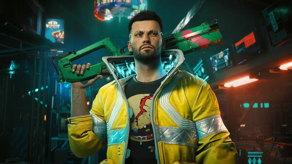
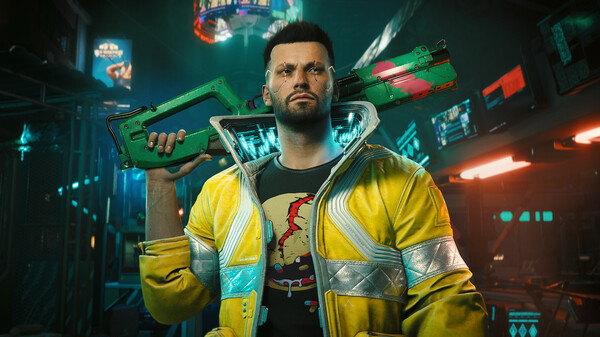

Cyberpunk 2077 adalah RPG aksi-petualangan dunia terbuka yang berlatar masa depan gelap Night City — kota metropolitan berbahaya yang terobsesi dengan kekuatan, glamor, dan modifikasi tubuh tanpa henti.
Cyberpunk 2077 adalah RPG aksi-petualangan dunia terbuka yang berlatar kota metropolitan Night City, tempat Anda bermain sebagai tentara bayaran cyberpunk yang terlibat dalam pertarungan mati-matian demi bertahan hidup. Meningkatkan dan menampilkan konten tambahan gratis yang semuanya baru, sesuaikan karakter dan gaya bermain Anda saat Anda mengambil pekerjaan, membangun reputasi, dan membuka kunci peningkatan. Hubungan yang Anda jalin dan pilihan yang Anda buat akan membentuk cerita dan dunia di sekitar Anda. Legenda dibuat di sini. Apa jadinya milikmu?
Rasakan mekanisme gameplay yang baru dan dirombak untuk memenuhi fantasi cyberpunk terliar Anda. Pembaruan 2.0 gratis menghadirkan cara-cara baru untuk memainkan Cyberpunk 2077, termasuk fasilitas dan sistem cyberware yang didesain ulang sepenuhnya, pertarungan kendaraan dan kejar-kejaran mobil, sistem kepolisian yang diperbarui, AI tempur musuh yang ditingkatkan, dan banyak lagi.

MENDARAT, MENJARAH DAN BERTAHAN! Mainkan PUBG: BATTLEGROUNDS gratis. Mendarat di lokasi strategis, menjarah senjata dan perbekalan, dan bertahan untuk menjadi tim terakhir.
Bertahan di berbagai Medan Pertempuran yang beragam kini menjadi gratis untuk dimainkan, dari yang dulunya anda harus merogoh kocek hingga Rp.200.000 untuk memainkannya kini jadi gratis.

Grand Theft Auto V untuk PC menawarkan pemain opsi untuk menjelajahi dunia pemenang penghargaan Los Santos dan Blaine County dalam resolusi hingga 4k atau lebih, serta kesempatan untuk merasakan game berjalan pada 60 frame per detik.

Pemenang lebih dari 175 Game of the Year Awards dan penerima lebih dari 250 skor sempurna, RDR2 adalah kisah epik penjahat Arthur Morgan dan geng Van der Linde yang terkenal, dalam pelarian melintasi Amerika pada awal zaman modern. Juga termasuk akses ke dunia kehidupan bersama Red Dead Online.